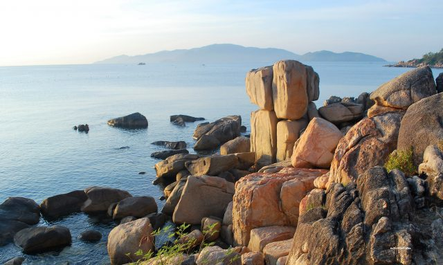

Nắng vàng rực rỡ, biển xanh ngắt, cát trắng mịn màng - đó là những gì bạn sẽ được trải nghiệm khi đặt chân đến Nha Trang, "hòn ngọc" của biển Đông. Nhưng ẩn mình sau vẻ đẹp kiêu sa ấy là cả một thế giới đảo hoang sơ, kỳ bí, chờ đợi những tâm hồn ưa khám phá. Nha Trang nổi tiếng là thành phố du lịch được nhiều du khách trong và ngoài nước yêu thích nhất Việt Nam. Nha Trang thuộc tỉnh Khánh Hoà với bãi biển dài dọc thành phố, gồm nhiều các đảo lớn nhỏ thuộc vịnh Nha Trang như Hòn Tre, Hòn Tằm, Hòn Mun, Hòn Chồng – Vợ đều thuộc những thắng cảnh tuyệt đẹp hấp dẫn khách du lịch đến thăm.
1. Hòn Mun: Vương Quốc San Hô Huyền Bí Cách đất liền khoảng 20 phút đi tàu, Hòn Mun hiện ra như một ốc đảo xanh giữa biển khơi. Nổi tiếng với làn nước trong như pha lê, đây là nơi lý tưởng để chiêm ngưỡng "vương quốc" san hô rực rỡ sắc màu với hàng trăm loài cá tung tăng bơi lội. Hãy thử một lần lặn xuống đáy biển, bạn sẽ choáng ngợp trước vẻ đẹp kỳ ảo của thế giới đại dương. Hòn Mun nằm trong danh sách khu bảo tồn biển đầu tiên của Việt Nam, là nơi ở của các loài sinh vật biển quý hiếm trong lòng đại dương với những loài cá và san hô, nơi bạn có thể đắm chìm vào thế giới sinh vật biển đầy màu sắc.

2. Hòn Tằm: Nàng Thơ Yêu Kiều Giữa Biển Khơi Đảo Hòn Tằm (đảo Thủy Kim Sơn) cách thành phố Du lịch Nha Trang 7km về phía Đông Nam, có diện tích khoảng 110 ha. Đứng từ đảo Hòn Tằm có thể nhìn chiêm ngưỡng cả thành phố Nha Trang ở hướng Bắc và bán đảo Cam Ranh ở phía Nam. Hòn Tằm quyến rũ du khách bởi vẻ đẹp thơ mộng, yên bình. Bãi biển cát trắng mịn màng như nhung, làn nước xanh biếc như ngọc, cùng những hàng dừa nghiêng mình soi bóng, tạo nên một khung cảnh đẹp như tranh vẽ. Đến đây, bạn có thể thả mình trên bãi biển, đắm mình trong làn nước mát lạnh, hay tham gia các hoạt động thể thao biển sôi động.
3. Hòn Chồng - Hòn Vợ: Chuyện Tình Bên Bờ Sóng Gắn liền với truyền thuyết về tình yêu chung thủy, Hòn Chồng - Hòn Vợ là điểm đến không thể bỏ qua khi đến Nha Trang. Hòn Chồng sừng sững như người chồng che chở, Hòn Vợ nhỏ nhắn nép mình bên cạnh như người vợ hiền dịu. Ngồi trên mỏm đá, phóng tầm mắt ra khơi xa, bạn sẽ cảm nhận được vẻ đẹp hùng vĩ của thiên nhiên và sự lãng mạn của tình yêu.
4. Vịnh Ninh Vân: Maldives Thu Nhỏ Giữa Lòng Nha Trang Cách Nha Trang khoảng 60km, Vịnh Ninh Vân được ví như "Maldives của Việt Nam" với vẻ đẹp hoang sơ, yên bình. Những khu resort sang trọng ẩn mình giữa rừng cây xanh mát, bãi biển riêng tư trải dài cát trắng, cùng làn nước trong xanh như pha lê, hứa hẹn một kỳ nghỉ dưỡng đẳng cấp và lãng mạn. Bạn sẽ mất tầm 20 phút để đi bằng tàu cao tốc ra đảo và đến nơi, tất cả những gì bạn thấy trước mắt sẽ khiến bạn ngạc nhiên và sững sờ bởi sự bình yên và vẻ đẹp trong sự tĩnh lặng tuyệt vời của nơi đây.
5. Vịnh Vân Phong: Bức Tranh Sơn Thủy Hữu Tình
Cách 40km về phía Bắc, Vân Phong là sự kết hợp hoàn hảo giữa biển xanh, cát trắng, núi non
hùng vĩ và những cánh rừng nguyên sinh xanh ngát. Nơi đây thu hút du khách bởi vẻ đẹp hoang
sơ, kỳ bí với quần thể đảo lớn nhỏ, những vịnh nhỏ yên bình và hệ sinh thái biển phong phú.
Nha Trang không chỉ có biển xanh, cát trắng, nắng vàng mà còn có cả một "hậu cung" đảo ngọc,
mỗi nơi một vẻ đẹp riêng, hứa hẹn những trải nghiệm khó quên. Hãy đến và khám phá ngay nhé!